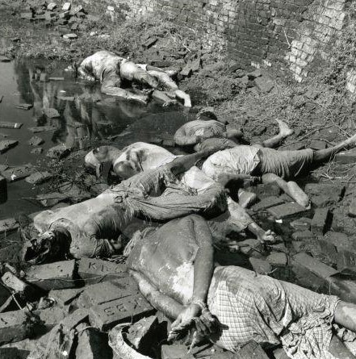
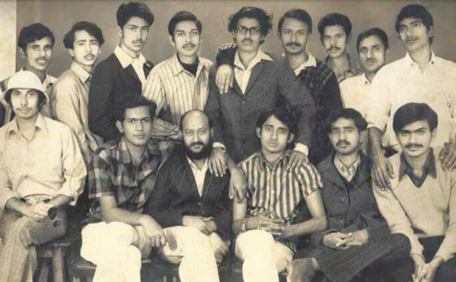

Dr. Adam Jones
Professor, Political Science
University of British Columbia, Canada
Within comparative genocide studies, sadly, the Bangladesh genocide remains strikingly little known– something that I and a few others have sought to redress in our modest ways. This reflects the peripheral position of East Pakistan in the global order– something that also accounts for the lack of international interest and intervention at the time, to which I will return.
This is despite the fact that from a comparative perspective, the Bangladesh genocide of 1971 was one of the most extreme and destructive genocides of the twentieth century, with as many as 3 million people killed. Reading English language sources like Anthony Mascarenhas’s short book, and even more Kalyan Chaudhuri’s impressive work Genocide in Bangladesh, I was struck by the parallels between the Pakistani slaughter of Bengalis and some of the most savage atr. . .
Read More

আহমেদ দীন রুমি
হোটেল ইন্টারকন্টিনেন্টাল, ঢাকার বুকে চোখধাঁধানো এক পাশ্চাত্যের জৌলুস। সারা পৃথিবীর সাংবাদিক, শিল্পী, সরকারি ও বেসরকারি প্রতিনিধিদের ভিড় লেগে আছে হামেশাই। পূর্ববাংলায় আন্তর্জাতিক কর্মপরিকল্পনার কেন্দ্র বললেও ভুল বলা হবে না। বাংলার বিদ্রোহ ও সংগ্রামকে বিশ্বের সামনে আনতে প্রয়োজন এরকম একটা জায়গাতে আক্রমণ। আর সেই পথটাই বেছে নিলো কয়েকজন দুঃসাহসী তরুণ। জুন মাসের ৯ তারিখ বিশ্বব্যাংকের প্রতিনিধি আসলে পরপর তিনটি গ্রেনেড ছুড়ে জানান দিলো নিজেদের অস্তিত্ব। দ্বিতীয় দফায় বিস্তৃতভাবে আক্রমণ চালানো হয় ১১ আগস্ট বিকেলে। হোটেলের বাথরুমে ২৮ পাউন্ড প্লাস্টিকের বিস্ফোরণে নড়ে উঠে গোটা ভবন।
গল্পের নায়ক সামাদ ও বকর অনেক আগে থেকেই যে প্ল্যান . . .
আরও পড়ুন
সাইয়েদা আক্তার
বাংলাদেশের মুক্তিযুদ্ধের সময় নৌ-কমান্ডো বাহিনীর পরিচালিত প্রথম অভিযান ছিল 'অপারেশন জ্যাকপট'। ১৯৭১ সালের ১৬ই অগাস্ট প্রথম প্রহরে দেশের দুইটি সমুদ্রবন্দর—চট্টগ্রাম ও মোংলা, এবং দুইটি নদী বন্দর- চাঁদপুর ও নারায়ণগঞ্জে একযোগে একই নামে পরিচালিত অপারেশনগুলো চালানো হয়েছিল।
অপারেশন জ্যাকপট ছিল একটি আত্মঘাতী অভিযান। এই অভিযানকে মুক্তিযোদ্ধারা সফল অভিযান বলে বর্ণনা করেন, কারণ এই অপারেশনে পাকিস্তান ও আরও ক . . . .
আরও পড়ুন
শুভ সরকার
নাগাল্যান্ডের এক শ্বাপদসংকুল জনপদে যাত্রা শুরু করে বাংলাদেশ বিমান বাহিনী। যে বাহিনীতে জীবন বাজি রেখে যুক্ত হয়েছিলো দেশপাগল একেকজন মানুষ। মুক্তিযুদ্ধের শেষদিকে এসে এই কিলো ফ্লাইট'ই করে এমন একটি অপারেশন, পুরো যুদ্ধের সমীকরণই আমূল পালটে যায় তখন!
বাংলাদেশের মুক্তিযুদ্ধ শুরু হওয়ার পরপরেই জীবন বাজি রেখে পাকিস্তান থেকে একে একে আসা শুরু করেছিলো পাকিস্তান সেনা, বিমান ও নৌবাহিনীতে কর্মরত বাঙ্গালী অফিসারেরা। এই অফিসারেরা চাকরিসূত্রে অবস্থান করছিলেন পাকিস্তানে। তাদের আরাম-আয়েশের যে জীবন ছিলো, তা হিসেব করে মাঝেমধ্যে ভাবি, তারা খুব সহজেই পারতেন, বিপদের মধ্যে না এসে নিরাপদে পাকিস্তানে থাকতে৷ সেটা যদি তারা করতেন, তাহলে বাংলাদেশের ইতিহাস কীরকম হতো, সেটা জানি না। তবে তাদের অবদানই যে দিনশেষে গড়ে দিয়েছিলো অনেকটা পার্থক্য, তা বলার অপেক্ষা রাখে না। সেই বিবেচনায় আজ পাকিস্তান থেকে পালিয়ে আসা এমন এক মানুষকে নিয়ে কথাবার্তা হবে, যিনি যুক্ত ছিলেন মুক্তিযুদ্ধে অংশ নেওয়া বাংলাদেশের প্রথম বিমান বাহিনীর সাথে, যে বাহি . . .
আরও পড়ুন
ডেল এইচ খান
বেলা ১১টা বেজে ২৮ মিনিট
২০ আগস্ট, ১৯৭১
মাশরুর বিমানঘাঁটি, করাচি, পাকিস্তান।
এয়ারট্রাফিক কন্ট্রোল টাওয়ারের রেডিওতে হঠাৎ ভেসে এল “ব্লুবার্ড ওয়ান সিক্স সিক্স ইজ হাইজ্যাকড…” মুহূর্তের ভেতর মাশরুর বিমানঘাঁটি সচকিত হয়ে উঠল। কর্তব্যরত এয়ারট্রাফিক কন্ট্রোলার ফ্লাইট লেফটেন্যান্ট আসেম রশীদ মেসেজটা শুনে মুহূর্তের জন্য অসার বোধ করলেন যেন। তিনি ধাতস্থ হয়ে ওঠার আগেই টি-৩৩ বিমানটা রানওয়ে ধরে হুঁস করে উড়ে বেরিয়ে গেল, তারপর নিয়মমতো ডানে মোড় না নিয়ে বাঁয়ে মোড় নিয়ে খুব নিচু দিয়ে উড়ে দূর-দিগন্তে অদৃশ্য হয়ে গেল; বিমানটার কলসাইন ছিল ‘ব্লুবার্ড-১৬৬।’
সামরিক বিমানঘাঁটি থেকে সামরিক বিমান ছিনতাইয়ের ঘটনা হরদম ঘটে না। অবশ্য মার্চ মাসে ঢাকায় ক্র্যাকডাউনের পর থেকেই বাঙালি পাইলটরা বিমান ছিনতাইয়ের চেষ্টা করতে পারেন ভেবে পাকিস্তানিরা সতর্ক ছিল। সে কারণেই বাঙালি পাইলটদের ইতিমধ্যে গ্রাউন্ডেড করে রাখা হয়েছে, যেন বিমানের ককপিটের ধারেকাছেও কেউ ঘেঁষতে না পারেন। কিন্তু অঘটনটা যে শেষ পর্যন্ত আর ঠেকানো গেল না তা এখন নিশ্চিত। তাই শুরুতে ধাক্কা খেলেও একমুহূর্ত পরেই রশীদ সংবিত ফিরে পেলেন। . . . .
আরও পড়ুন